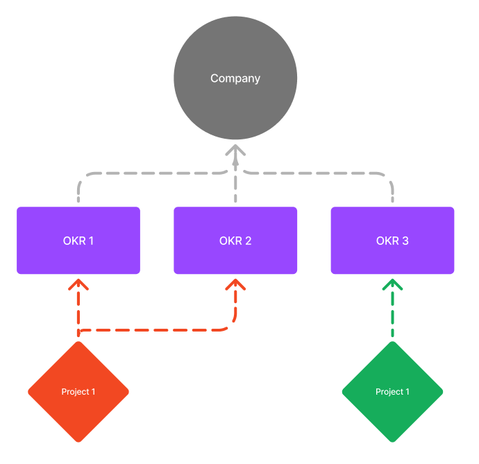

The pillars of AI Strategy and Transformation
Part 1: Business Priorities
The Marketing Scientist
The Seven-Layer Framework for AI Strategy Success
AI is the most transformative technological shifts in today’s business landscape. Research shows that 49% of leaders struggle to demonstrate the value of their AI initiatives, with these percentages increasing significantly in underdeveloped markets like LATAM and Africa. Success requires not only technical expertise but also a well-structured approach built on fundamental pillars that support sustainable growth.
Overview of the Framework
My framework provides a structured approach to developing and implementing an effective AI strategy. Each layer builds upon the previous one, creating a comprehensive foundation for success. Feedback loops ensure continuous improvement and learning across all phases of the implementation journey.
Each of these layers has its own methodologies, which I’ll discuss in later articles.
Initial Assessment Layer
Business Strategic Priorities
A well-defined AI strategy starts with a deep understanding of the business’s strategic priorities. Without this, AI initiatives risk becoming isolated experiments rather than integrated solutions that drive business value.
1. Alignment with Organizational Goals
AI should serve as a catalyst for achieving business objectives, whether they involve revenue growth, cost reduction, market share expansion or branding. Leadership buy-in and support on organizational and financial matters is critical for ensuring strategic alignment.
If geographical, vertical or PNL segregation are evident, the organization siloes must be open to sharing their goals, priorities, operational concerns ad procedures, and strategic information, while embracing new ways of working and approaching business challenges, without any fear of losing control, power or revenue. If a reliable and clearly recognized governance structure is in place, goal alignment should not be a problem.
As AI Strategists, we go department by department, geography by geography, vertical by vertical and product by product, understanding these elements and identifying requirement patterns that have the potential to improve business performance.
2. Market Position and Competitive Landscape Analysis

Understanding the company’s position in the market helps define AI’s role. Market leaders might use AI for differentiation through innovation, while challengers may focus on business performance.
Having at disposal business KPIs and OKRs is key to ensure a measurable AI impact and business outcomes.
📊 Examples of Critical KPIs to assess AI impact: - Market Share
- Share of Voice
- Leadership Positioning
- Quality Perception
- Customer Acquisition Costs
- Customer Lifetime Value (CLV)
- Operational Costs and ROI
Within an industry, different companies are commonly well known to have an edge on a particular business aspect like technology, consulting, performance, brand positioning, etc… Benchmarking against industry best products and competitors provides insight into AI-driven differentiation opportunities. The goal is to leverage AI for a unique advantage to improve any of the benchmark KPIs.
3. Scope of Present and Future Client or Customer Engagements
AI can enhance customer relationships and open new market segments. This is perhaps the most ignored application of basic AI algortihms like those in Supervised Machine Learning. Businesses must explore how AI can create new value for their clients and for themselves, embracing change. Businesses can use their hard earned lessons form previous client or customer experiences.
This stage mainly involves a strong brainstorming and incorporation of business prioties and market positioning into the generation of seemlessly viable ideas. Cross-functional and active participation is requried and highly encouraged for a continuous proccess of idea generation and decantation. Set a clear deadline for the completion of this stage and align entrerprise wide communication.
⚠️ Beware: Defining a wishlist creates a level of expectation in different departments. Expectation management is crucial moving forward.
4. Lessons Learned
Organizations must document their past AI and Analytics successes and failures. This helps refine strategies and avoid repeating mistakes, ensuring that AI investments focus on opporutnities with high impact and high probability of success. Provide failure context, business problems that should have been solved, solutions tried and the results obtained.
💡Even if solutions were not as sucessful as expected, the material, infrastructure, models and data used might be valuable asset for future future business and clients problems and solutions, drastically reducing production costs. If that’s the case, ensure you have a strured plan to leverage these assets moving forward.
5. Long-Term Vision Mapping
AI transformation is a long-term journey. A strategic roadmap should outline where AI will play a role in the next 5 to 10 years, considering emerging technologies, evolving client and customer needs, and regulatory changes.
Yes, I said 5 to 10 years. Many companies spent the last decade chasing trends rather than investing in AI with longevity. Most have got none to little results:
-🚨 Hired AI or Data Science teams only to dismantle them every few months for internal politics reasons or when the hype cycle shifts. -🚨 Hesitated to commit to AI as a core capability while simultaneously chasing the latest “AI revolution”. -🚨 Done very little with the data they already have.
Aim to validate your AI inititatives ASAP, but keep in mind it will most probably require iterations, a first failure is not a reason to fire your AI team after 3 months of hiring them and reallocate AI investmetns to other areas in the company. If you’re truly concerned about wether a potentialy expensive AI initiative will succeed, set goals for the following 6 and 9 months after the AI team has been hired and trained. AI teams need not know the business as you or some of your teams do, they also need input on business context. Do it well.
6. Business UVPs (Unique Value Propositions)
AI must reinforce the company’s unique value proposition. For example: - A company competing on efficiency → AI should focus on automation.
- A company competing on customer experience → AI should focus on hyper-personalization.
The AI capabilities to enhance unique value propositions is the one of the main responsabilities of us AI Strategists. True differentiation steams from data, AI outputs for business decisions, customer and client experience, and revenue. A comprehensive AI strategy has much more in store than you think.
💡Most companies have a few central products or services, but business opportunities might arise from marginal products and services in which the company is planning to increase investment. Some products or services are also weak spots when compared to industry benchmarks, AI could represent an opportunity for industry parity.
7. 🤝 Business Current Partnerships
AI strategies are accelerated by strategic partnerships. Collaborating with cloud providers, data vendors, research institutions and AI startups strengthens AI capabilities and ensures access to the latest innovations.
🤝 Potential AI Partnerships: - Magnificent 6 (Google, Meta, Amazon, Apple, Microsoft, NVIDIA)
- Data vendors (for training AI models)
- Research institutions
- AI startups - Regional recognized data providers.
Some of the best AI transformation opportunities are nurtured by existing but unexplored parterships.
⚠️ Each partnership type requires especific considerations: Partherships need to be managed with care and corporate responsibility. Excessive reliance on partnerships can rerail your business success and threaten its future very quickly and very easily. I’ll write more about this important topic in the future.
Iteration, Patience, Proactivity and Improvement
A regular review and adaptation of approach ensures alignment with changing market conditions and organizational goals. Success comes from balancing ambitious vision with practical implementation while maintaining focus on delivering measurable value.